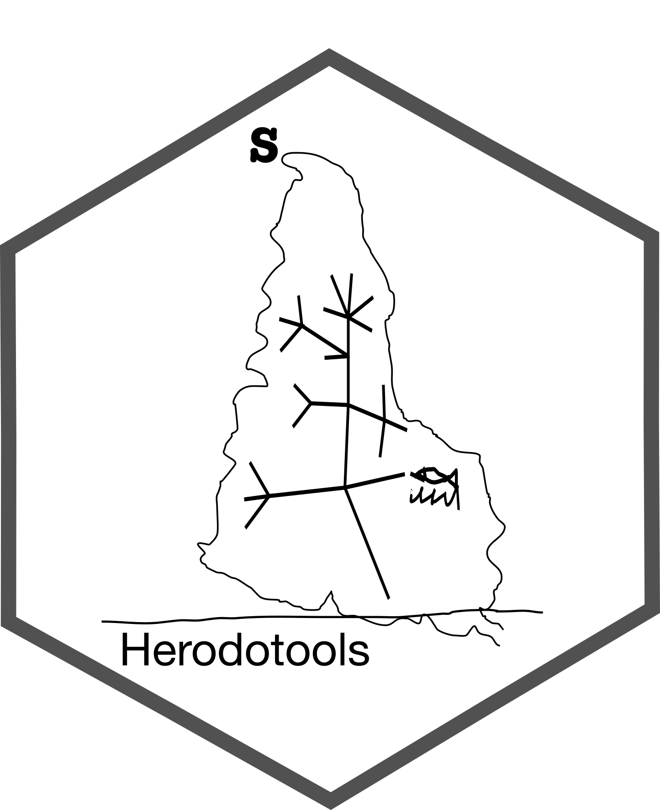

General overview
History matters - some context on package name and aims
Historical events affect our daily lives in many ways. Who has never asked what would happen if we had done something different in the past? Like in the classic movie by Frank Capra It’s a Wonderful Life, that latter inspired the book name by the great SJ Gould, changes in past events shape our present life dramatically. The same is true in the natural world, history matters a lot, and species distribution in ecological communities results from present and past events.
Like the ancient Greek historian and geographer Herodotus, our package aims to put together tools that allow us to investigate the role of history systematically. However, instead of narrating stories about kings and famous battles, we hope to help ecologists to tell their stories of nature and the nature of history in shaping our biodiversity.
Disclosure: The package logo is inspired by a pen and ink drawing by the Uruguayan artist Joaquín Torres Garcia called America Invertida. The image is closely related to Garcia’s manifesto “The School of the South,” that he defines as:
“The School of the South’ because, in reality, our north is the south. There must not be north for us, except in the opposition of the south. Therefore we now turn the map upside down, and then we have the true idea of our position, and not as the rest of the world wishes. The point of America, from now on, forever, insistently points to the south, our north.”
We choose this painting to represent an effort of South American scientists trying to figure out the north in Biogeography studies.
The package
Herodotools is an R package that allows us to perform analysis to investigate the effects of historical processes, specifically diversification and historical dispersal, in determining the biodiversity structure of assemblages and biogeographical regions. This is achieved by integrating tools of macroevolutionary dynamics (e.g., ancestral area reconstruction, trait reconstruction) with metrics commonly used in community phylogenetics and also by providing new metrics that integrate the macroevolutionary dynamics in assemblage or biogeographical scales. Some of the functions presented in Herodotools package has been used in previous studies to understand, for example, imprints of historical processes in present day patterns of diversity, macroecological patterns and the interplay effects of ecological variation and macroevolutionary dynamics
In general, Herodotools was designed to work as a unified platform of analysis of historical biogeography by integrating methods from Macroecology, Macroevolution and Community Phylogenetics.
Download
To install the development version of this package the user must type:
if (!requireNamespace("devtools", quietly = TRUE)){
install.packages("devtools")
}
devtools::install_github("GabrielNakamura/Herodotools")Examples
For more details and examples please visit Herodotools web page